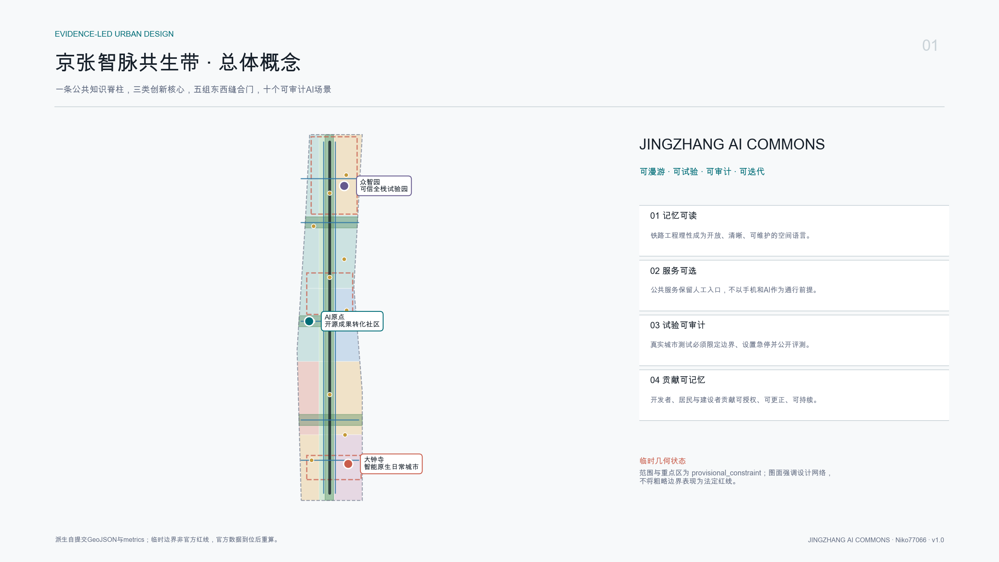
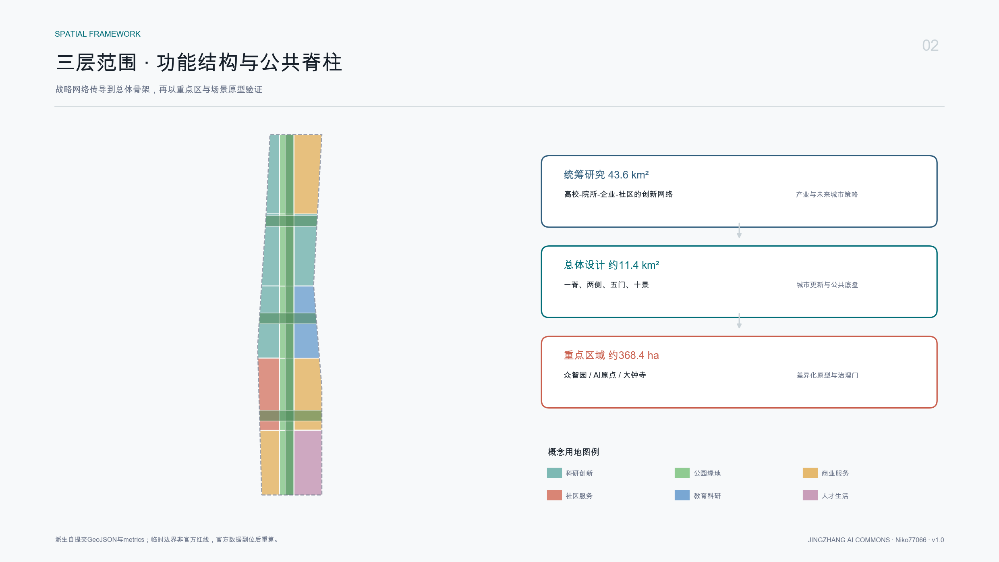
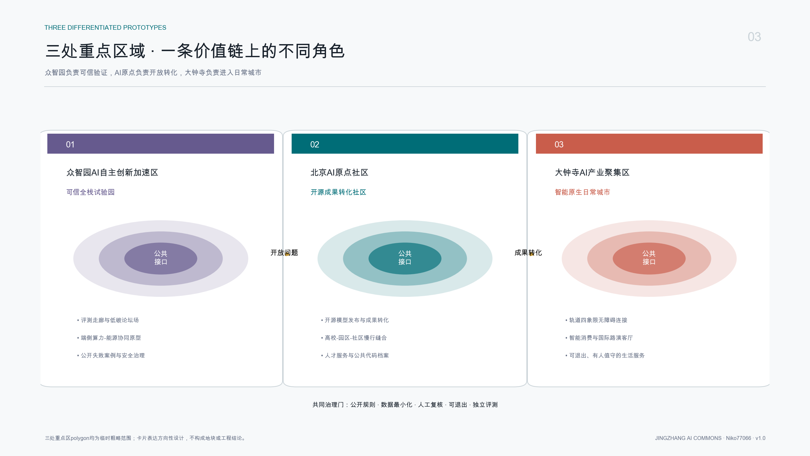
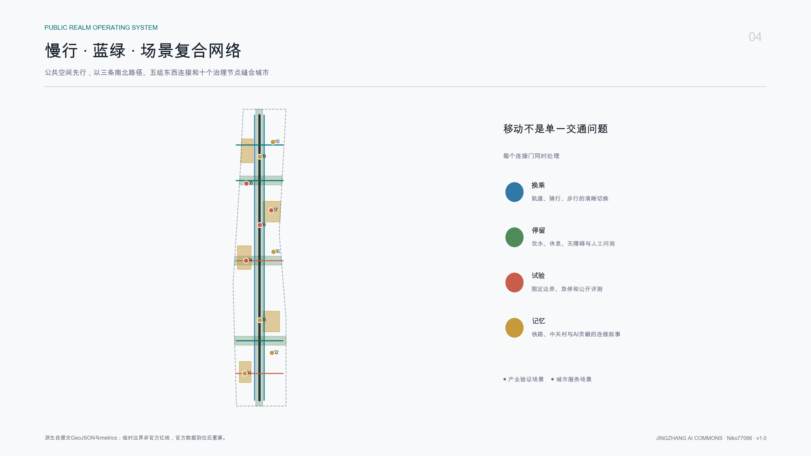
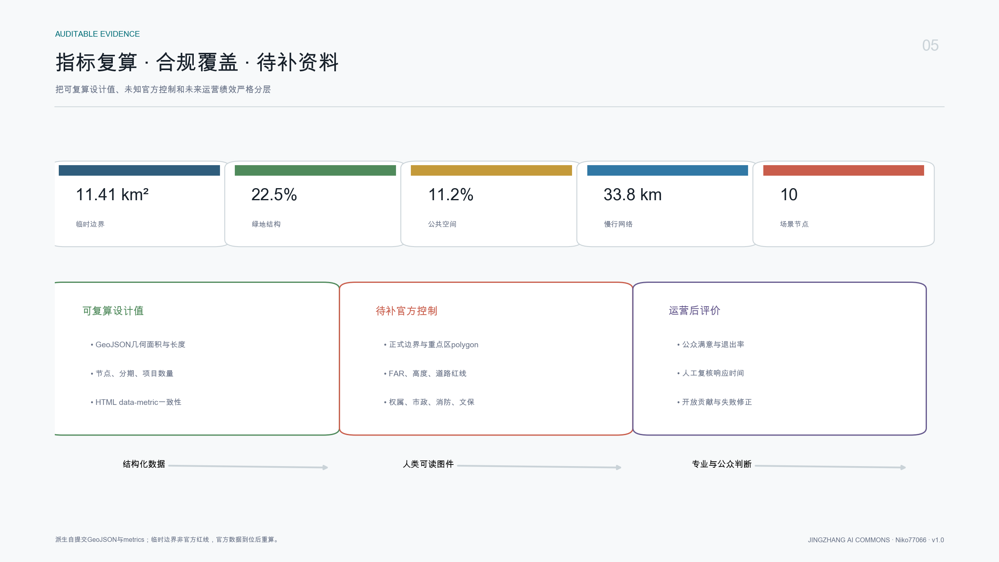

总览地图
总体概念、重点区域与设计网络
site-overview.png
三层范围与用地分区
战略网络、总体骨架、重点原型逐级传导
land_use.geojson
重点区域
三核形成可信验证、开放转化、日常应用价值链
key_areas.geojson
交通慢行、蓝绿公共空间与建筑更新项目
公共底盘先行，线位与建筑仅表达概念关系
roads + green + public + buildings
核心指标
页面值与 metrics.json 逐项一致
EPSG:4548 recomputation临时边界面积11.41 km²
绿地结构22.5%
公共空间11.2%
慢行网络33.8 km
AI场景节点10

AI 场景
不少于3个产业测试验证场景，全部设置隐私边界和人工复核
SCENARIO_NODE × 1001 智能原生消费助手城市服务 · 概念建议
02 轨道站点无障碍导航城市服务 · 概念建议
03 京张文化共创导览城市服务 · 概念建议
04 开源模型发布厅产业验证 · 概念建议
05 社区健康转介助手城市服务 · 概念建议
06 低速机器人共路沙盒产业验证 · 概念建议
07 可信AI评测走廊产业验证 · 概念建议
08 端侧算力与能源协同产业验证 · 概念建议
09 开发者协作与荣誉档案城市服务 · 概念建议
10 国际创新活动服务城市服务 · 概念建议
任务覆盖、自检状态、来源与假设
结构化证据优先，人类图件用于解释
23/23 requirements任务覆盖
公告 1.3、1.4、1.5 共17项，以及 agent.1-agent.6 共6项，均映射到正文、GeoJSON、metrics、A3/A0与本离线页面。
compliance_matrix.json · standard_matrix.json · design_depth_matrix.json
关键假设
官方边界、控规、权属、交通、市政、消防、文保与生态条件未齐。当前空间方案只供概念讨论，不能形成审批、投资或工程结论。
官方边界、控规、权属、交通、市政、消防、文保与生态条件未齐。当前空间方案只供概念讨论，不能形成审批、投资或工程结论。
来源
正式任务依据来自官方公告、清权智能体任务书及仓库本地标准；国际案例仅为 background-only，不支撑北京项目控制结论。
自检状态
deterministic validation、spatial review、visual packaging check、professional evidence review 均由仓库脚本执行。临时边界警示持续保留。